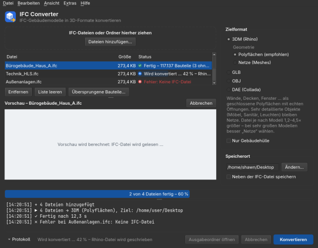
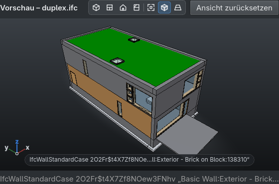

IFC-Gebäudemodelle nach Rhino (3DM), GLB, OBJ und DAE konvertieren · Probephase im Büro · English version on page {english_page}
Der IFC Converter wandelt IFC-Dateien (IFC2x3, IFC4, IFC4.3; auch IFC2x2 und der IFC4x4-Entwurf, gepackte .ifczip) in 3D-Formate um: Rhino .3dm (Polyflächen oder Netze, Layer nach Geschoss und Bauteilklasse, Bauteildaten als Benutzertext), GLB, OBJ und DAE. Die Ausgabe ist immer in Metern, Lage und Maße entsprechen exakt der IFC. Die IFC-Datei selbst wird nie verändert, vorhandene Ausgabedateien werden nie überschrieben.

Das Programmfenster: Dateiliste und Vorschau links, Zielformat und Speicherort rechts, Protokoll unten.
Das Häkchen „Nur Gebäudehülle“ wandelt nur um, was von außen zu sehen ist: Außenwände, Dächer, Fenster, Türen, Balkone, Gelände. Innenwände, Decken, Möbel, Sanitär und Leitungen bleiben weg. Die Datei wird dadurch deutlich kleiner – gedacht für Umgebungsmodelle und schwächere Rechner. Glas gilt dabei als undurchsichtig. Bei kleinen Modellen dauert die Umwandlung damit etwas länger (ein grober Durchgang bestimmt zuerst die Hülle).

Vorschau mit Ansichtsleiste (über der Ansicht), Kantenlinien, Achsenkreuz und angeklicktem Bauteil.
| Aktion | Bedienung |
|---|---|
| Drehen | linke Maustaste ziehen (dreht um den angeklickten Punkt) |
| Verschieben | mittlere oder rechte Maustaste ziehen, oder Umschalt + linke Maustaste |
| Zoomen | Mausrad (zum Mauszeiger hin), Doppelklick zeigt das ganze Modell |
| Ansichten | Tasten 1–4 oder die Knöpfe der Ansichtsleiste: Iso, Oben, Vorne, Seite; F = alles, Pos1 = Startansicht |
| Bauteil-Info | Klick auf ein Bauteil zeigt Klasse, GlobalId und Name; Esc hebt die Auswahl auf |
| Darstellung | Knöpfe der Ansichtsleiste für Kantenlinien an/aus (E) und Perspektive/Parallelprojektion (P) |
Die Vorschau startet von selbst, wenn der freie Arbeitsspeicher für die Datei reicht, sonst auf Knopfdruck („Vorschau berechnen“); das Einlesen der IFC-Datei dauert etwa 35 s je 600 MB, danach wächst das Bild alle paar Sekunden. Ohne Grafikbeschleunigung (Remote-Desktop, virtuelle Maschine) zeichnet das Programm automatisch in Software.
Menü Extras → Sprache (englisch: Tools → Language). Nach der Wahl bietet das Programm einen Neustart an. Verfügbar: Deutsch, Englisch, Französisch, Spanisch, Italienisch, Portugiesisch, Niederländisch, Polnisch, Türkisch. Beim ersten Start ist die Oberfläche englisch.
So gibst du eine Rückmeldung:
Die anonymisierte Logdatei enthält keine Benutzer-, Rechner-, Server-, Ordner-, Datei- oder Bauteilnamen – nur Zeiten, Größen, Zahlen und die Meldungen des Programms. Sie bleibt auf deinem PC, bis du sie selbst weitergibst. Wer dauerhaft anonym protokollieren will: Extras → Einstellungen → Logdatei → „Logdatei anonymisieren“.
Neben dem Programm liegt ifc-convert.exe: ifc-convert haus.ifc -f 3dm -g mesh, ifc-convert *.ifc -d ausgabe\, Optionen --envelope (nur Hülle), --blocks, --lang de. ifc-convert --help zeigt alles.
Convert IFC building models to Rhino (3DM), GLB, OBJ and DAE · office trial
The IFC Converter turns IFC files (IFC2x3, IFC4, IFC4.3; also IFC2x2 and the IFC4x4 draft, packed .ifczip) into 3D formats: Rhino .3dm (polysurfaces or meshes, layers by storey and element class, element data as user text), GLB, OBJ and DAE. Output is always in metres; positions and dimensions match the IFC exactly. The IFC file is never modified and existing output files are never overwritten.
The window: file list and preview on the left, output format and folder on the right, log at the bottom.
The checkbox “Only the building hull” converts only what is seen from outside: exterior walls, roofs, windows, doors, balconies, terrain. Interior walls, floors, furniture, sanitary fittings and building services are left out, so the file gets much smaller – meant for context models and weaker PCs. Glass counts as opaque. On small models the conversion takes somewhat longer (a coarse pass determines the hull first).

Preview with the view bar (above the view), edge lines, axis triad and a clicked element.
| Action | Control |
|---|---|
| Orbit | drag with the left mouse button (around the clicked point) |
| Pan | drag with the middle or right button, or Shift + left button |
| Zoom | mouse wheel (towards the cursor); double-click shows the whole model |
| Views | keys 1–4 or the view bar's buttons: Iso, Top, Front, Side; F = fit all, Home = start view |
| Element info | click an element to see class, GlobalId and name; Esc clears the selection |
| Display | view bar buttons for edge lines on/off (E) and perspective/parallel projection (P) |
The preview starts on its own when the free memory has room for the file, otherwise on request (“Compute preview”); reading the IFC file takes about 35 s per 600 MB, after that the picture grows every few seconds. Without graphics acceleration (remote desktop, virtual machine) the program draws in software automatically.
Menu Tools → Language. After choosing, the program offers to restart. Available: English, German, French, Spanish, Italian, Portuguese, Dutch, Polish, Turkish. The first start is in English.
How to give feedback:
The anonymised log contains no user, computer, server, folder, file or element names – only times, sizes, numbers and the program’s messages. It stays on your PC until you pass it on yourself. To log anonymously all the time: Tools → Settings → Log file → “Anonymise log file”.
Next to the program there is ifc-convert.exe: ifc-convert house.ifc -f 3dm -g mesh, ifc-convert *.ifc -d output\, options --envelope (hull only), --blocks, --lang de. ifc-convert --help lists everything.